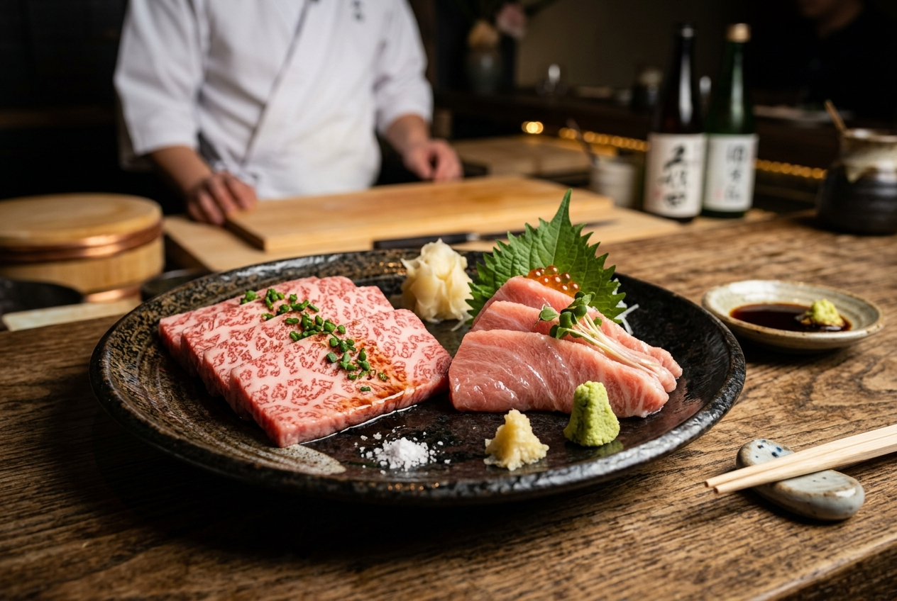

CHEF'S CHOICE

極上 おまかせ - 18 MÓN
Set Kiwami Grand...
Trải nghiệm đỉnh cao với Otoro ủ lạnh 14 ngày, Bào ngư Ezo hầm rượu Sake...
Giá cho 1 khách3.800.000 đ
SIGNATURE

雅 懐石 - 14 MÓN
Set Miyabi Kaiseki
Sự hài hòa thi vị giữa các món nướng than Binchotan thơm nồng và Sashi...
Giá cho 1 khách2.800.000 đ
TRADITIONAL

月 握り - 12 MÓN
Set Tsuki Nigiri...
Khám phá nghệ thuật cơm giấm đỏ Akasu bí truyền đi kèm 10 tuyệt phẩ...
Giá cho 1 khách1.950.000 đ
LIMITED SEASONAL

桜 季節限定 - 16 MÓN
Set Sakura Seasonal...
Hương vị đầu mùa đặc trưng với Mực đom đóm Toyama, Cá thu Sawara xô...
Giá cho 1 khách3.200.000 đ
PRESTIGE

和牛 & 大トロ - 20 MÓN
Set Wagyu & Otoro...
Sự thăng hoa tuyệt đối giữa Bò Wagyu A5 tỉnh Miyazaki và Bụng cá ngừ vây...
Giá cho 1 khách4.800.000 đ
LUNCH EXCLUSIVE

天満宮 昼食 - 10 MÓN
Set Tenmangu Lunch...
Phiên trải nghiệm giờ trưa cô đọng với Chawanmushi trứng nhím biển, 8 mó...
Giá cho 1 khách1.500.000 đ
Hiển thị 1 - 6 trên tổng số 12 thực đơn Omakase